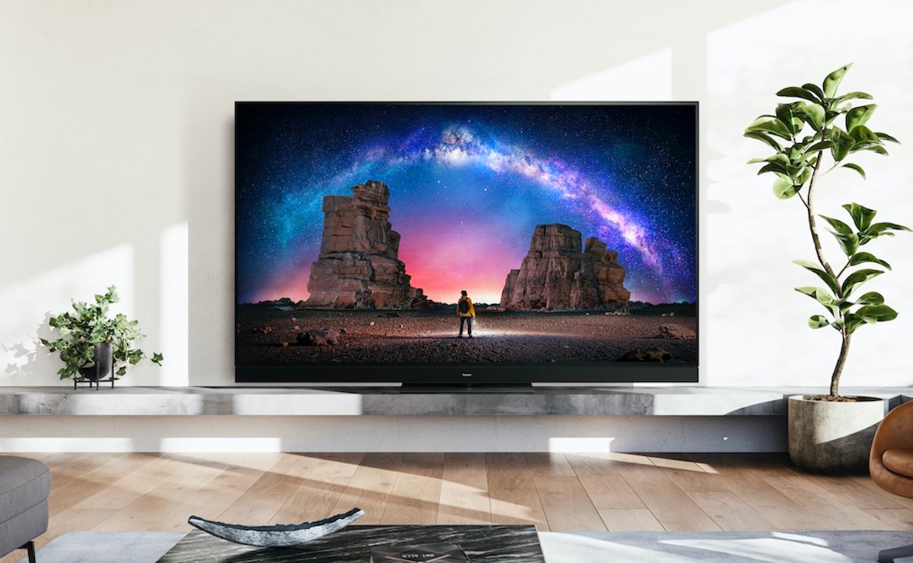

Der LG OLED G3 überzeugt durch herausragende Bildqualität dank OLED-Technologie, die perfekte Schwarzwerte und lebendige Farben liefert. Mit einer beeindruckenden 4K-Auflösung garantiert er gestochen scharfe Bilder mit feinsten Details. Sein schlankes Design mit ultradünnem Rahmen fügt sich elegant ins Wohnzimmer ein. Zudem bietet er umfangreiche Smart-TV-Funktionen für vielfältiges Entertainment und ist dank HDMI 2.1 zukunftssicher für kommende Technologien. All diese Eigenschaften machen den LG OLED G3 zweifellos zum besten Fernseher, der ein unvergleichliches Seherlebnis bietet.
Der Panasonic MZW2004 überzeugt durch herausragende Bildqualität dank OLED-Technologie, die perfekte Schwarzwerte und lebendige Farben liefert. Mit einer beeindruckenden 4K-Auflösung garantiert er gestochen scharfe Bilder mit feinsten Details. Sein schlankes Design mit ultradünnem Rahmen fügt sich elegant ins Wohnzimmer ein. Zudem bietet er umfangreiche Smart-TV-Funktionen für vielfältiges Entertainment und ist dank HDMI 2.1 zukunftssicher für kommende Technologien. All diese Eigenschaften machen den Panasonic MZW2004 zweifellos zum besten Fernseher, der ein unvergleichliches Seherlebnis bietet.

Der Sony A95L überzeugt durch herausragende Bildqualität dank OLED-Technologie, die perfekte Schwarzwerte und lebendige Farben liefert. Mit einer beeindruckenden 4K-Auflösung garantiert er gestochen scharfe Bilder mit feinsten Details. Sein schlankes Design mit ultradünnem Rahmen fügt sich elegant ins Wohnzimmer ein. Zudem bietet er umfangreiche Smart-TV-Funktionen für vielfältiges Entertainment und ist dank HDMI 2.1 zukunftssicher für kommende Technologien. All diese Eigenschaften machen den Sony A95L zweifellos zum besten Fernseher, der ein unvergleichliches Seherlebnis bietet.